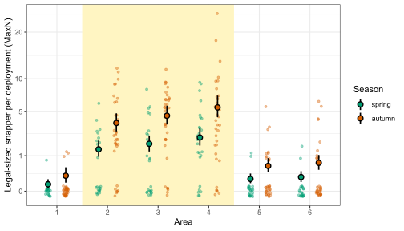
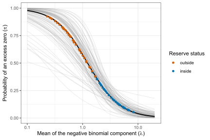

library(brms)
fit <- brm(
formula = bf(
y ~ eta,
nlf(zi ~ g0 + g1 * eta),
eta ~ x1 + x2 + (1 | group),
g0 ~ 1,
g1 ~ 1,
nl = TRUE
),
data = my_data,
family = zero_inflated_negbinomial(),
prior = c(
prior(normal(0, 2.5), nlpar = "eta"),
prior(normal(0, 2.5), nlpar = "g0"),
prior(normal(0, 2.5), nlpar = "g1")
)
)Linked zero inflation in brms
1 Linked zero inflation
This vignette provides code for fitting the linked zero-inflated model of Smith et al. (2012) in brms (Bürkner 2017) and Stan, in place of the OpenBUGS code published with the original papers. In the linked model, the probability of an excess zero, \(\pi\), is a logistic function of the log of the mean of the count distribution, \(\lambda\): \[
\text{logit}(\pi_i) = \gamma_0 + \gamma_1 \log(\lambda_i),
\] where \(i\) indexes observations and \(\gamma_0\) and \(\gamma_1\) are parameters to be estimated. Smith et al. (2012, 2014) supplied R and OpenBUGS (Lunn et al. 2009) code for fitting this model, but OpenBUGS has now largely been superseded by more modern software. In brms, the model requires only the zero-inflated negative binomial family that brms provides and a non-linear formula (Bürkner 2018), with no custom family or Stan code, and the functions for prediction and model checking (posterior_epred(), posterior_predict(), loo(), and pp_check()) work on the fitted model without modification.
Here is how to implement the linked model in brms, with y a count and x1, x2, and group standing for the predictors in any particular study:
The linear predictor for \(\log(\lambda)\) is declared as a non-linear parameter, eta, which then enters both the formula for the mean and the formula for zi, the brms name for \(\pi\). The zero-inflated negative binomial family in brms has a log link for the mean and a logit link for zi, so each formula is written on the scale of its linear predictor, and zi ~ g0 + g1 * eta is the linked model of Smith et al. (2012). The two parameters of the link, g0 and g1, are non-linear parameters, each with an intercept only. A non-linear model in brms requires a proper prior on every non-linear parameter, so the coefficients of eta, g0, and g1 each need one. Because \(\gamma_1\) multiplies \(\log(\lambda)\), rescaling the counts shifts \(\log(\lambda)\) by a constant, which changes \(\gamma_0\) but not \(\gamma_1\), so a prior for \(\gamma_1\) does not depend on the units of the counts.
2 Snapper in and around Te Whanganui-A-Hei (Hahei) Marine Reserve
The example uses counts of legal-sized snapper, Chrysophrys auratus (Sparidae), formerly Pagrus auratus, from baited underwater video deployments in and around Te Whanganui-A-Hei (Hahei) Marine Reserve, New Zealand, analysed by Smith et al. (2012) and, with two other reserves, by Smith et al. (2014).
library(brms)
library(tidyverse)
library(tidybayes)
snapper <- read_csv(
"data/snapper-hahei.csv",
show_col_types = FALSE
) |>
mutate(
reserve = factor(reserve, levels = c("outside", "inside")),
season = factor(season, levels = c("spring", "autumn")),
area = factor(area),
year = factor(year)
)Each of the 348 counts is the maximum number of legal-sized snapper seen in any one frame of a video (MaxN), from 6 areas (3 inside the reserve), 9 years, and two seasons. Zeros made up 55% of the counts: 83% of those outside the reserve, where the mean count was 0.32, and 28% of those inside, where the mean count was 3.39.
Following Smith et al. (2012), the model for \(\log(\lambda)\) included reserve status and season as fixed effects, and area and year as random effects. We used Normal(0, 2.5) priors for the coefficients of eta, g0, and g1, which are weakly informative on the log scale of \(\lambda\) and the logit scale of \(\pi\), a half-Student-t prior with 3 degrees of freedom and scale 2.5 for the standard deviations of the random effects, and Gamma(0.01, 0.01), the brms default, for the shape parameter of the negative binomial.
f_linked <- bf(
count ~ eta,
nlf(zi ~ g0 + g1 * eta),
eta ~ reserve + season + (1 | area) + (1 | year),
g0 ~ 1,
g1 ~ 1,
nl = TRUE
)
pr_linked <- c(
prior(normal(0, 2.5), nlpar = "eta"),
prior(normal(0, 2.5), nlpar = "g0"),
prior(normal(0, 2.5), nlpar = "g1"),
prior(student_t(3, 0, 2.5), class = "sd", nlpar = "eta"),
prior(gamma(0.01, 0.01), class = "shape")
)
fit_linked <- brm(
formula = f_linked,
data = snapper,
family = zero_inflated_negbinomial(),
prior = pr_linked,
chains = 4,
iter = 3000,
warmup = 1000,
control = list(adapt_delta = 0.99),
seed = 2012,
file = "fits/fit-linked"
)Four chains of 2,000 post-warmup draws each were run with adapt_delta = 0.99. The largest \(\hat{R}\) was 1.002, and none of the 8,000 post-warmup transitions were divergent.
The number of zeros in data simulated from the fitted model can be compared with the number observed:
zeros_linked <- snapper |>
add_predicted_draws(fit_linked) |>
group_by(.draw) |>
summarise(zeros = sum(.prediction == 0))The posterior predictive distribution of the number of zeros had a median of 190 (95% interval 170 to 211), against 191 observed.
The function add_epred_draws() in tidybayes calls posterior_epred(), which returns the predicted mean count, \((1 - \pi)\lambda\), with \(\pi\) computed through the link. With dpar = TRUE, it also returns \(\lambda\) (mu) and \(\pi\) (zi). Here it was evaluated for every sampled combination of area, year, and season:
pred_draws <- snapper |>
distinct(area, reserve, year, season) |>
add_epred_draws(fit_linked, dpar = TRUE) |>
ungroup()The predicted mean count for each area and season, averaged over the years in which that combination was sampled, is shown with the observed counts in Figure 1.
Code for the figure
# Average the predicted mean counts over years within each area and season,
# then summarise the draws.
pred_area_season <- pred_draws |>
group_by(area, season, .draw) |>
summarise(
mean_count = mean(.epred),
.groups = "drop_last"
) |>
median_qi(mean_count)
season_cols <- c(
spring = "#009E73",
autumn = "#D55E00"
)
# The areas inside the reserve (2 to 4) are shaded.
set.seed(1)
ggplot() +
annotate(
"rect",
xmin = 1.5,
xmax = 4.5,
ymin = -Inf,
ymax = Inf,
fill = "#FFF5C2"
) +
geom_point(
data = snapper,
aes(
x = area,
y = sqrt(count),
colour = season
),
position = position_jitterdodge(
jitter.width = 0.2,
jitter.height = 0.15,
dodge.width = 0.7
),
alpha = 0.4,
size = 1.1
) +
geom_pointrange(
data = pred_area_season,
aes(
x = area,
y = sqrt(mean_count),
ymin = sqrt(.lower),
ymax = sqrt(.upper),
fill = season,
group = season
),
position = position_dodge(width = 0.7),
shape = 21,
colour = "black",
size = 0.6,
linewidth = 0.8
) +
scale_y_continuous(
breaks = sqrt(c(0, 1, 5, 10, 20, 30)),
labels = c(0, 1, 5, 10, 20, 30)
) +
scale_colour_manual(values = season_cols) +
scale_fill_manual(values = season_cols) +
labs(
x = "Area",
y = "Legal-sized snapper per deployment (MaxN)",
colour = "Season",
fill = "Season"
) +
theme_bw()
3 Comparison with negative binomial and constant zero-inflation models
To check whether the link improved the model, we fitted two alternatives with the same predictors for \(\lambda\) and the same priors: a negative binomial model with no zero inflation, and a zero-inflated negative binomial model with constant \(\pi\).
pr_glm <- c(
prior(normal(0, 2.5), class = "b"),
prior(normal(0, 2.5), class = "Intercept"),
prior(student_t(3, 0, 2.5), class = "sd"),
prior(gamma(0.01, 0.01), class = "shape")
)
fit_nb <- brm(
formula = count ~ reserve + season + (1 | area) + (1 | year),
data = snapper,
family = negbinomial(),
prior = pr_glm,
chains = 4,
iter = 3000,
warmup = 1000,
control = list(adapt_delta = 0.99),
seed = 1,
file = "fits/fit-nb"
)
fit_constant <- brm(
formula = bf(
count ~ reserve + season + (1 | area) + (1 | year),
zi ~ 1
),
data = snapper,
family = zero_inflated_negbinomial(),
prior = c(
pr_glm,
prior(normal(0, 2.5), class = "Intercept", dpar = "zi")
),
chains = 4,
iter = 3000,
warmup = 1000,
control = list(adapt_delta = 0.99),
seed = 2,
file = "fits/fit-constant"
)loo_linked <- loo(fit_linked, reloo = TRUE)
loo_constant <- loo(fit_constant, reloo = TRUE)
loo_nb <- loo(fit_nb, reloo = TRUE)
loo_compare(loo_linked, loo_constant, loo_nb) model elpd_diff se_diff p_worse diag_diff diag_elpd
fit_linked 0.0 0.0 NA
fit_constant -6.4 4.2 0.93
fit_nb -7.2 4.5 0.94 Expected log predictive density, estimated by Pareto-smoothed importance-sampling leave-one-out cross-validation (PSIS-LOO, Vehtari et al. 2017), was greatest for the linked model, exceeding that of the model with constant \(\pi\) by 6.4 (SE 4.2) and that of the negative binomial model by 7.2 (SE 4.5). Each difference was less than twice its standard error, so the support for the link from these data is moderate. Observations with a Pareto \(k\) value above 0.7, the threshold above which PSIS-LOO estimates are unreliable (Vehtari et al. 2017), were handled by refitting the model without them (reloo = TRUE).
The model with constant \(\pi\) estimated a probability of an excess zero of 0.11 (0.01 to 0.22). The median number of zeros predicted was 183 for the model with constant \(\pi\) and 180 for the negative binomial model, against 191 observed and 190 for the linked model. A constant \(\pi\) applies equally to deployments inside and outside the reserve, whereas the proportion of zeros was 83% outside and 28% inside.
4 Estimated relationship between zero inflation and the mean count
fit_linked |>
gather_draws(b_g0_Intercept, b_g1_Intercept) |>
median_qi()# A tibble: 2 × 7
.variable .value .lower .upper .width .point .interval
<chr> <dbl> <dbl> <dbl> <dbl> <chr> <chr>
1 b_g0_Intercept 0.313 -0.921 1.54 0.95 median qi
2 b_g1_Intercept -1.52 -2.51 -0.764 0.95 median qi The probability of an excess zero decreased as the mean count increased, with a posterior median for \(\gamma_1\) of −1.52 (95% credible interval −2.51 to −0.76), and for \(\gamma_0\) of 0.31 (−0.92 to 1.54) (Figure 2). Averaged over the 72 sampled combinations of area, year, and season, the probability of an excess zero was 0.68 (0.49 to 0.79) outside the reserve and 0.19 (0.09 to 0.27) inside.
Code for the figure
# The relationship for every posterior draw, over a grid of lambda.
curves <- link_draws |>
expand_grid(lambda = exp(seq(log(0.1), log(20), length.out = 100))) |>
mutate(pi = plogis(b_g0_Intercept + b_g1_Intercept * log(lambda)))
median_curve <- curves |>
group_by(lambda) |>
summarise(pi = median(pi))
set.seed(2012)
curves_100 <- curves |>
filter(.draw %in% sample(unique(.draw), 100))
# Posterior medians of lambda and pi for each sampled combination.
cell_points <- pred_draws |>
group_by(area, reserve, year, season) |>
summarise(
lambda = median(mu),
pi = median(zi),
.groups = "drop"
)
ggplot() +
geom_line(
data = curves_100,
aes(
x = lambda,
y = pi,
group = .draw
),
colour = "grey60",
alpha = 0.3,
linewidth = 0.3
) +
geom_line(
data = median_curve,
aes(
x = lambda,
y = pi
),
linewidth = 0.9
) +
geom_point(
data = cell_points,
aes(
x = lambda,
y = pi,
colour = reserve
),
size = 1.5
) +
scale_x_log10() +
scale_colour_manual(
values = c(
outside = "#D55E00",
inside = "#0072B2"
)
) +
labs(
x = expression("Mean of the negative binomial component (" * lambda * ")"),
y = expression("Probability of an excess zero (" * pi * ")"),
colour = "Reserve status"
) +
theme_bw()
5 Reserve effect
The reserve effect is the ratio of the mean count inside the reserve to the mean count outside it, computed within each posterior draw from the predicted mean counts in pred_draws:
reserve_effect <- pred_draws |>
group_by(.draw, reserve) |>
summarise(
mean_count = mean(.epred),
.groups = "drop"
) |>
pivot_wider(
names_from = reserve,
values_from = mean_count
) |>
mutate(ratio = inside / outside)
reserve_effect |>
median_qi(ratio)# A tibble: 1 × 6
ratio .lower .upper .width .point .interval
<dbl> <dbl> <dbl> <dbl> <chr> <chr>
1 11.1 7.46 16.7 0.95 median qi Averaged over the 72 sampled combinations of area, year, and season, with equal weight for each, mean counts were 11.1 (7.5 to 16.7) times greater inside the reserve than outside. This ratio applies to the areas and years that were sampled, and does not include the variation expected among new areas or years. The ratio is smaller than the 16.4 reported by Smith et al. (2012), which evaluated \((1 - \pi)\lambda\) at zero area, year, and season effects instead of averaging it over them.
6 Other implementations
Anderson et al. (2022) fitted the zero-inflated negative binomial with the link of Smith et al. (2012), which they called ZINBL, by maximum likelihood in the R package senlm, with a non-linear function for the mean response of a species along a single environmental gradient. Rabel (2023) fitted a Bayesian version in Stan, also along a single gradient, in the R package modskurt (source on GitHub), with \(\pi\) linked to the mean count divided by the peak mean count along the gradient, rather than to the log of the mean count.
References
Anderson, Marti J., Daniel C. I. Walsh, Winston L. Sweatman, and Andrew J. Punnett. 2022. “Non-Linear Models of Species’ Responses to Environmental and Spatial Gradients.” Ecology Letters 25: 2739–52. https://doi.org/10.1111/ele.14121.
Bürkner, Paul-Christian. 2017. “brms: An R Package for Bayesian Multilevel Models Using Stan.” Journal of Statistical Software 80 (1): 1–28. https://doi.org/10.18637/jss.v080.i01.
Bürkner, Paul-Christian. 2018. “Advanced Bayesian Multilevel Modeling with the R Package brms.” The R Journal 10 (1): 395–411. https://doi.org/10.32614/RJ-2018-017.
Lunn, David, David Spiegelhalter, Andrew Thomas, and Nicky Best. 2009. “The BUGS Project: Evolution, Critique and Future Directions.” Statistics in Medicine 28 (25): 3049–67. https://doi.org/10.1002/sim.3680.
Rabel, Hayden Daniel. 2023. “Bayesian Distributions of Species Abundance Along Environmental Gradients.” MSc thesis, Massey University. https://hdl.handle.net/10179/68976.
Smith, Adam N. H., Marti J. Anderson, and Russell B. Millar. 2012. “Incorporating the Intraspecific Occupancy–Abundance Relationship into Zero-Inflated Models.” Ecology 93 (12): 2526–32. https://doi.org/10.1890/12-0460.1.
Smith, Adam N. H., Marti J. Anderson, Russell B. Millar, and Trevor J. Willis. 2014. “Effects of Marine Reserves in the Context of Spatial and Temporal Variation: An Analysis Using Bayesian Zero-Inflated Mixed Models.” Marine Ecology Progress Series 499: 203–16. https://doi.org/10.3354/meps10653.
Vehtari, Aki, Andrew Gelman, and Jonah Gabry. 2017. “Practical Bayesian Model Evaluation Using Leave-One-Out Cross-Validation and WAIC.” Statistics and Computing 27: 1413–32. https://doi.org/10.1007/s11222-016-9696-4.